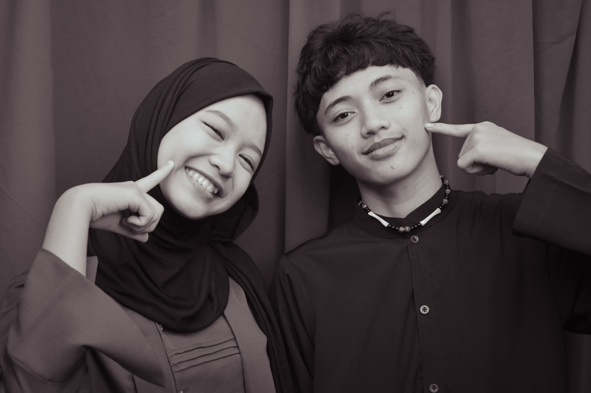
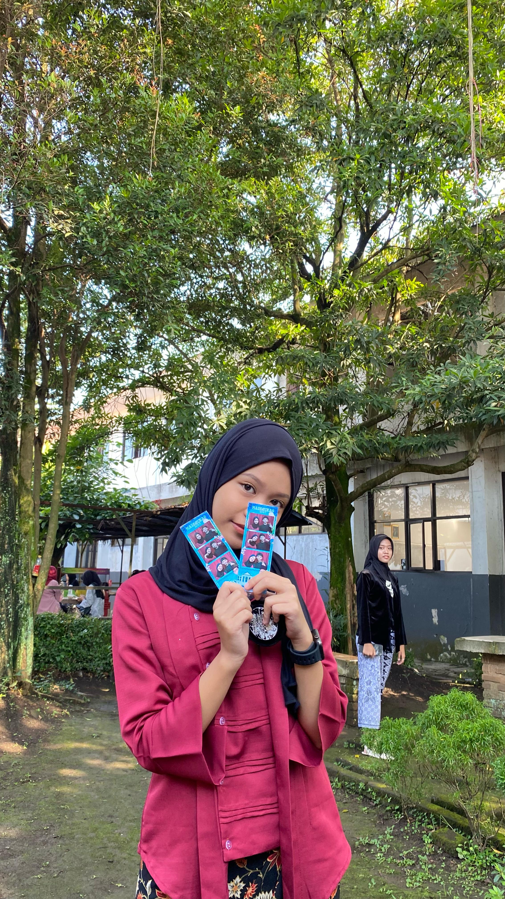
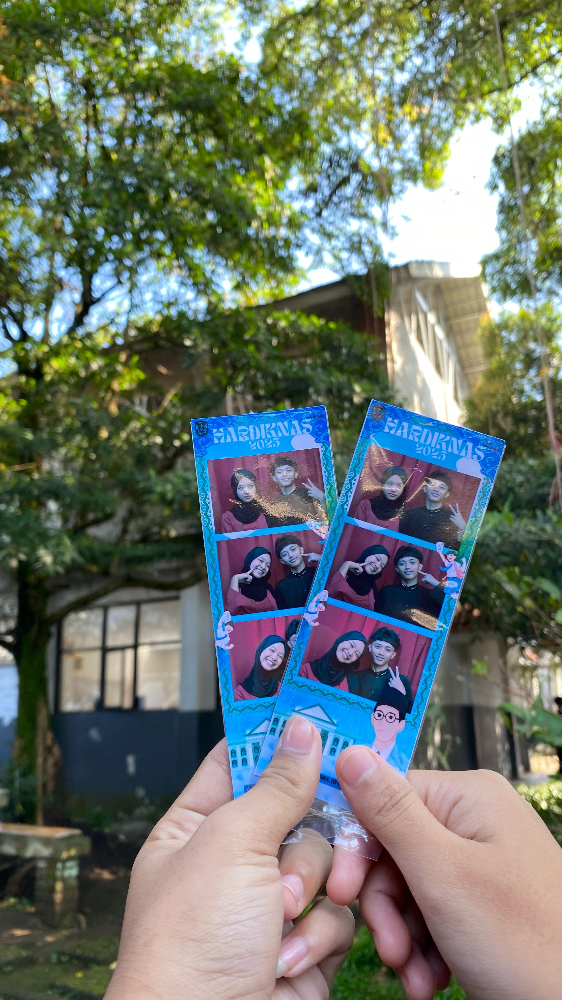
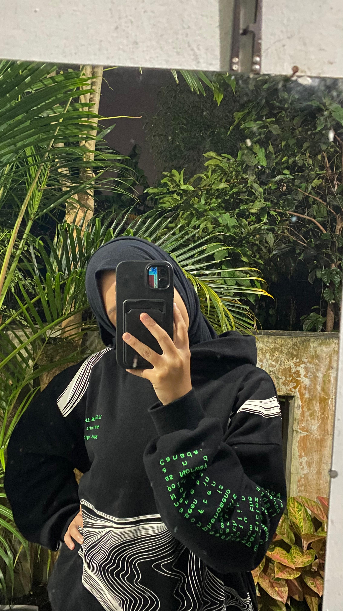

baaru kali ini aku foto gayanya kaya giniiii lucu bngt kamu ge wuttttt 1000x1000 like buat foto ini ngan sayang muka aku lagi breakout duhhhh

kagettt gaaaa tiba" bngt ku aku di ajak fotobuttt hehehe tapiii lucuuu ini fotonya fav aku bngt tapi ituuu wuttt yg blkng nya kasian bngtke foto anjayyy wkwkw ngakak aku teh asa udh ngehapus tapi ga nemu fotonyaaa wut

hayooooo tebakkk tangan yg cowo yg mana yg cewe yang mana hahhahahah bisa bisanya kuku aku se ngeblink itu wut,,, apalagi yahhhh ooo iyaaaa

nahhh ini aku msih kecewaaa naha hasilnya giniii ga mirip bngt kannnn asdjnwnpqudnja itu juga nyoekeun kertasnya kaya gituu,,,,,
apalagiii hayooo selnjutnya mahhh pengen curhat ahhhh

lucuuuu ini jugaaaa iniii
silvii makasih yaaa udh mau dengerin aku yapping bilang aja klo lgi ga mau dengerin aku yappingg heheh gatau lagi kalo g ada kmu sill meren aku cuman bisa istigfar sakit teparrr tapiii skrng ada yg mau nampung aku cerita itu juga kayanya jadi faktor utama aku ga sakit" dehhh soalnya setiap aku lagi kesel pasti cerita ke kamu sill maap juga ngerepotin sampe harus ngikutin kesel akuuu heheh apalagi yaaaa oooo iyaaa sebenernya tadi di iter juga cerita mata aku berkaca kaca dikit se kesel itu aku
makasihhhh makasih 1000 kali juga ga akan cukup buat kamu mahh sil aku gatau harus gimana buat ngebls waktu kamu yg di pake buat dengerin aku yapping pake ginian juga kayanya masih belum cukup, kamu se care itu sama akuuu pokoy mahhh semngt yaaaa smngt buat nyiapin lombanya jugaaa jangan sampe di hari" kmu harus kaya kejadian kaya aku tadi hehehe soalnya ngurasnya bukan cuman kesel doang
MAKASIH SILVIIIIIIIIIIII KAMU HEBAT BISA TAHAN DENGERIN AKU YAPPING,, jaga kesehatan yaaaa jangan sampe sakittt lagi suaara kamu mahal jangan pernah di sia sia innnn GUTEN ABEND SILVIII